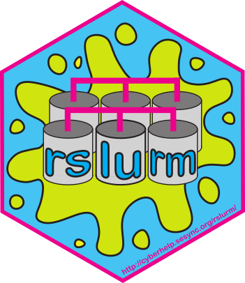

About
Development of this R package was supported by the National Socio-Environmental Synthesis Center (SESYNC) under funding received from the National Science Foundation grants DBI-1052875 and DBI-1639145.
The package was developed by Philippe Marchand and Ian Carroll, with Mike Smorul and Rachael Blake contributing. Quentin Read is the current maintainer.
As of January 2023 the University of Colorado Boulder’s Earth Lab adopted rslurm and is responsible for all future maintenance.
Installation
You can install the released version of rslurm from CRAN with:
install.packages("rslurm")And the development version from GitHub with:
# install.packages("devtools")
devtools::install_github("earthlab/rslurm")Documentation
Package documentation is accessible from the R console through package?rslurm and online.
Example
Note that job submission is only possible on a system with access to a Slurm workload manager (i.e. a system where the command line utilities squeue or sinfo return information from a Slurm head node).
To illustrate a typical rslurm workflow, we use a simple function that takes a mean and standard deviation as parameters, generates a million normal deviates and returns the sample mean and standard deviation.
test_func <- function(par_mu, par_sd) {
samp <- rnorm(10^6, par_mu, par_sd)
c(s_mu = mean(samp), s_sd = sd(samp))
}We then create a parameter data frame where each row is a parameter set and each column matches an argument of the function.
pars <- data.frame(par_mu = 1:10,
par_sd = seq(0.1, 1, length.out = 10))We can now pass that function and the parameters data frame to slurm_apply, specifying the number of cluster nodes to use and the number of CPUs per node.
library(rslurm)
sjob <- slurm_apply(test_func, pars, jobname = 'test_apply',
nodes = 2, cpus_per_node = 2, submit = FALSE)The output of slurm_apply is a slurm_job object that stores a few pieces of information (job name, job ID, and the number of nodes) needed to retrieve the job’s output.
See Get started for more information.